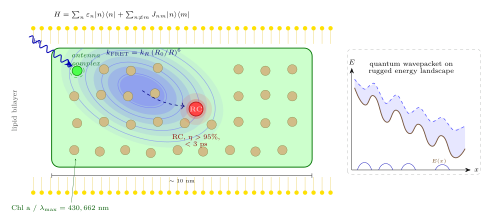

光合作用的第一步用到了什么量子效应?
前面我们追着光子走了很远, 从脉冲星旋转灯塔的机械钟一路追到射电波穿过星际介质的色散. 从本节起, 我们把望远镜调转方向, 把目光落在脚下的草地上 —— 光是怎么被生命用起来的?
每一秒, 地球表面每平方米接收约 $1000\;\text{W}$ 的太阳能, 其中绿色植物把大约 $1\%$ 固定为化学能, 驱动整个食物链. 这个转化的第一步只涉及一个光子和几个分子, 发生在几皮秒之内, 是纯粹的量子物理. 如果我们不把这一步看清楚, 就没有资格说"我们理解了光".
我们所要回答的问题非常具体: 一个光子被叶绿素吸收之后, 它带着的那份能量是怎么在十几纳米的距离内, 以接近 $100\%$ 的效率传到反应中心的? 这个问题在几十年里被经典 Förster 理论"糊弄"了过去, 直到 2007 年的一组实验打开了缝.
一、光合作用的总方程与量子入口
我们从一个 19 世纪末到 20 世纪初才被彻底澄清的式子开始. 1931 年 van Niel 通过比较绿植和紫硫细菌的代谢, 提出光合作用的通用方程可以写成水或硫化氢被氧化、二氧化碳被还原的形式. 对绿色植物而言, 净反应是
$$ \mathrm{H_2O} + \mathrm{CO_2} + h\nu \;\longrightarrow\; \mathrm{O_2} + (\mathrm{CH_2O}), \tag{1} $$
其中 $(\mathrm{CH_2O})$ 泛指单糖一级的碳水化合物. 这个式子左边有一个"$h\nu$", 看起来平淡无奇, 实则正是我们这一节要解剖的全部内容 —— 因为从吸收这个 $h\nu$ 到电子完成第一次跨膜转移, 中间全部是相干的量子过程.
光子进入叶片后, 最先遇到的是天线复合物 (antenna complex, 或 light-harvesting complex, LHC). 一个天线复合物是一块镶嵌在类囊体膜上的蛋白质骨架, 骨架里精确地定位着大约 $100$ 个色素分子 —— 主要是叶绿素 a、叶绿素 b 和一些类胡萝卜素. 叶绿素 a 的吸收峰在 $\lambda_{\max}=430\;\text{nm}$ (Soret 带) 和 $\lambda_{\max}=662\;\text{nm}$ (Q 带), 两个峰之间对绿光几乎没有吸收, 这就是植物呈绿色的原因.
一个光子被某一个外围色素吸收之后, 这个色素的一个 $\pi$ 电子从基态跃迁到激发态, 整个分子进入一个激发的电子-振动态. 因为色素之间通过偶极-偶极耦合联系在一起, 这个激发并不死守在吸光的那个分子上, 而会"跳"或"流"到邻居身上. 我们把这个在色素网络上移动的激发量称为激子 (exciton).
激子不是经典的小球, 它是若干个分子共享的一次量子激发. 整个天线复合物的能量学最自然地用一个多态 Hamiltonian 来描述:
$$ H \;=\; \sum_{n} \varepsilon_n\, |n\rangle\langle n| \;+\; \sum_{n\neq m} J_{nm}\, |n\rangle\langle m|, \tag{2} $$
式中 $|n\rangle$ 代表"激发定域在第 $n$ 个色素"这个基矢, $\varepsilon_n$ 是该色素的位点能, $J_{nm}$ 是第 $n$ 个和第 $m$ 个色素之间的电子耦合. 如果 $J_{nm}$ 远小于位点能涨落, 激子就像粒子一样从一个色素跳到下一个; 如果 $J_{nm}$ 可与涨落相比, 激子就在若干色素上相干展开, 成为波包. 光合作用的反应中心位于若干个这样的天线簇的中央, 只要激子"走"到反应中心, 一次电荷分离就被触发 —— 从此这份能量跳出量子游戏, 进入经典生化.
二、经典 Förster 理论与它的极限
激子从一个色素到另一个色素的传输, 长期以来被 1948 年 Theodor Förster 提出的理论所描述. 这套理论现在被生物学家称为 FRET (Förster resonance energy transfer), 用偶极-偶极耦合算跃迁速率, 结论是
$$ k_{\text{FRET}} \;=\; k_R \left(\frac{R_0}{R}\right)^{6}, \tag{3} $$
其中 $R$ 是给体与受体之间的距离, $R_0$ 是两者的 Förster 半径 (取决于光谱重叠积分、折射率和偶极取向), $k_R$ 是给体的辐射速率. 关键是那个 $R^{-6}$: 距离增加一倍, 速率下降 $64$ 倍. 这个强距离依赖让 FRET 成为生物学里最好用的"纳米尺". 但它同时告诉我们一件严重的事 —— 一次 Förster 跳跃, 给体是先"忘记"再"通知"受体的, 相位信息完全丢失.
我们来做一次粗糙的估算. 天线复合物里相邻色素之间的距离大约是 $R\approx 1\;\text{nm}$, Förster 半径典型为 $R_0\approx 5\;\text{nm}$, 叶绿素的辐射速率 $k_R\sim 10^{8}\;\text{s}^{-1}$. 代入 (3) 得 $k_{\text{FRET}}\sim 10^{8}\times 5^6\approx 10^{12}\;\text{s}^{-1}$, 也就是说单步 FRET 发生在约 $1\;\text{ps}$ 内. 一个激子要跨越 $10\;\text{nm}$ 到反应中心, 如果靠 Förster 的经典随机行走, 步数大致是 $N\sim (10/1)^2=100$ 步, 总时间 $\sim 100\;\text{ps}$, 在这段时间里激子有很大概率通过荧光或内转化把能量丢掉.
可实验给出的能量传输效率是另一个样子. 在健康的绿色植物里, 从光子被天线吸收到反应中心完成电荷分离, 综合量子效率 $\eta>95\%$. 这个数字和经典随机行走估算之间差着半个数量级以上 —— 随机行走跑 $100$ 步中途大量漏能, 不可能给出这么高的效率. 换句话说, 经典 Förster 图像说得通单步速率, 但说不通整体的成功率.
在 Robert Emerson 1940 年代的工作里已经埋下过一颗伏笔. 他测量了氧放出的量子效率对波长的依赖关系, 发现超过 $680\;\text{nm}$ 以后效率急剧下降 ("red drop"), 而把两束不同波长的光叠加反而得到比单束加和更高的效率 ("Emerson enhancement"). 这个观察最终导出光合作用里有两个协同工作的光系统 (PS I 和 PS II) 的结构图景, 也第一次让人意识到: 能量在天线网络里的传递, 其效率对光谱细节敏感到让人不得不怀疑某种集体行为在起作用. 只是当时人们还没有工具看见那个集体行为.

三、2007 年 FMO 实验打开的缝
2007 年 Graham Fleming 小组在 Nature 发表了对绿硫细菌 FMO (Fenna-Matthews-Olson) 复合物的二维电子光谱测量. FMO 是一个小而漂亮的光合蛋白, 只含有 $7$ 或 $8$ 个细菌叶绿素, 是至今研究得最透彻的天线-反应中心连接桥. 他们用三束相干飞秒脉冲打在样品上, 测量第四束辐出光场的振幅与相位, 在时间延迟轴上扫出一张"频率-频率"相干谱.
结果惊人: 在 $T=77\;\text{K}$ 的低温下, 他们看到 $2\text{D}$ 谱上的交叉峰以约 $160\;\text{cm}^{-1}$ 的频率振荡, 振荡寿命达到约 $400\;\text{fs}$. 这个振荡来自不同激子本征态之间的相位差, 它只有在激子保持量子相干叠加时才存在. 经典的 Förster 跳跃图像预测这类振荡应在 $< 100\;\text{fs}$ 内就被环境涨落抹平, 而实验测到的却是它的四倍. 这意味着在 $400\;\text{fs}$ 之内, 激子不是在某一个色素上, 而是同时在若干色素上.
随后 2010 年 Scholes 组在室温下的海洋藻类 PE545/PC645 天线复合物中也报道了大约 $300\;\text{fs}$ 的长寿相干振荡. 至此一个新的图像被普遍接受: 天线里的激子至少在最初几百飞秒内是一个量子相干波包, 它不走一条路, 而是同时探索从起点到反应中心的所有路径, 像一个微型的 Feynman 求和.
这种"同时探索"带来一个清晰的效率优势. 经典随机行走在崎岖的能景上容易陷入局部极小值反复震荡; 量子波包则可以通过干涉让"通向 RC 的那条路"的振幅建设性相加, 其他陷阱路径的振幅相消, 从而选择性地把能量送到反应中心. 这和我们第一部分讨论过的 Feynman 最小作用量图像是同一类思想 —— 光和物质都是先相干叠加所有路径, 再让环境做出"选择".
但故事没有在这里结束. 2013 年之后, Miller 组等人的新一轮测量和理论分析指出, FMO 中很长寿的那部分相干信号, 其来源可能不是纯电子相干, 而是"振动-电子"耦合产生的混合相干 —— 激发和特定振动模重合, 振动相干"贷款"给电子相干. 另一些人则主张存在环境辅助量子输运 (ENAQT, environment-assisted quantum transport): 完全无噪声的相干演化反而会被干涉条纹锁住, 一定量的环境涨落恰好把激子振动"解锁", 让它更快流向反应中心. ENAQT 给出的结论很有意思: 相干与去相干不是对立面, 而是在某个最优的退相干率下达到最高效率.
四、温度极限、反应中心与历史回望
让我们用一次极限检验来看这套图像的鲁棒性. 去相干的基本尺度由色素与环境 (蛋白骨架的振动、水的溶剂化) 的耦合强度 $\lambda$ 和温度 $T$ 决定. 在高温极限下, 色素的位点能 $\varepsilon_n$ 的随机涨落方差随 $T$ 线性增长, 激子的纯退相时间大致满足
$$ T_2^{-1} \;\sim\; \frac{2\lambda k_\mathrm{B} T}{\hbar^2}\,\tau_c, \tag{4} $$
其中 $\tau_c$ 是环境涨落的相关时间. 把典型参数 $\lambda\approx 35\;\text{cm}^{-1}$、$\tau_c\approx 100\;\text{fs}$、$T=300\;\text{K}$ 代入 (4), 得到室温下的纯退相时间 $T_2\sim 150\;\text{fs}$, 与实验观测到的 $100$-$300\;\text{fs}$ 相干尺度量级一致. 降到 $77\;\text{K}$ 后, 按 (4) 的比例 $T_2$ 会延长约四倍到 $\sim 600\;\text{fs}$, 这正是 Engel-Fleming 实验看到的窗口.
这个估算告诉我们两件事. 第一, 相干在生理温度下依然存在, 只是窗口很短 —— 它不是极低温下的稀奇产物. 第二, 激子传输的总时间 (几皮秒) 比相干时间长一个量级, 所以整个过程的后半段其实是环境主导的经典扩散. 量子相干像赛车起跑后的前几百飞秒, 让激子获得一个"看清地形"的先机, 剩下的路则是在湿热嘈杂的环境里摸着走. 这也是为什么"相干完全决定效率"的强论断并不成立, 而 ENAQT 式的折中图像更接近真相.
激子一旦抵达反应中心, 故事进入第二幕: 电荷分离. 反应中心是另一对特殊的叶绿素 (所谓"特殊对", special pair), 激发它们会在不到 $3\;\text{ps}$ 内把一个电子从特殊对转移到邻近的去镁叶绿素 (pheophytin), 再到醌分子 QA, 每一步都超越热涨落对逆过程的驱动, 使得反向复合的概率被压低到可忽略. 整个从光子到稳定电荷分离的量子效率超过 $95\%$. 1984 年 Deisenhofer、Huber 和 Michel 解出了紫色细菌反应中心的原子分辨率结构, 第一次让我们看到色素分子是如何被蛋白骨架精确摆在那些几埃的位置上 —— 他们因此荣获 1988 年的诺贝尔化学奖. 没有这副几何精确的"光学台", 再好的量子相干也会被错位的色素浪费掉.
回望历史, 光合作用的研究构成了一条罕见的链条: 1930 年代 van Niel 给出通用方程, 1950 年代 Emerson 发现红降与双光系统暗示集体能量传递, 1980 年代 Deisenhofer 等解出反应中心结构, 2007 年 Fleming 等在 FMO 中第一次看到长寿量子相干. 这条链把一个看似纯生化的反应, 一步步逼到了量子力学的核心 —— 叠加、相干与环境耦合. 我们现在相信, 生命利用光的第一步, 确实是一场短促而精密的量子舞蹈, 只是这场舞蹈与我们在超导体和腔量子电动力学实验中看到的长寿相干不同, 它是一场和环境合作、而非对抗的量子过程.
小结
本节给出的答案是: 光合作用的第一步 —— 从光子被叶绿素吸收到激子抵达反应中心 —— 至少在最初几百飞秒里是量子相干的. 激子 Hamiltonian (2) 显示激发本质上是色素网络共享的叠加态, Förster 的 $R^{-6}$ 单步速率 (3) 给出 $\sim 1\;\text{ps}$ 的跳跃时间, 但经典随机行走估算与实测 $>95\%$ 的效率差得远; Engel-Fleming 2007 在 FMO 看到的 $400\;\text{fs}$ 相干振荡, 连同高温退相时间估算 (4), 共同支持了"量子波包同时探索能景"的图像, 环境的适度噪声不但不破坏、还可能帮助这份效率. 这让"光是什么"这一大问题在生命的尺度上添了一条新答案: 光在被生命利用的最初瞬间, 仍然是那份最彻底的波粒二象性 —— 既是触发电子跃迁的能量颗粒, 又是穿越数百飞秒的相干波. 下一节我们把视线从叶片挪到眼睛, 问一个更赤裸的问题: 一只人眼能不能看见单个光子?
▲